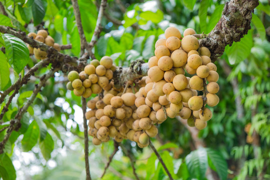
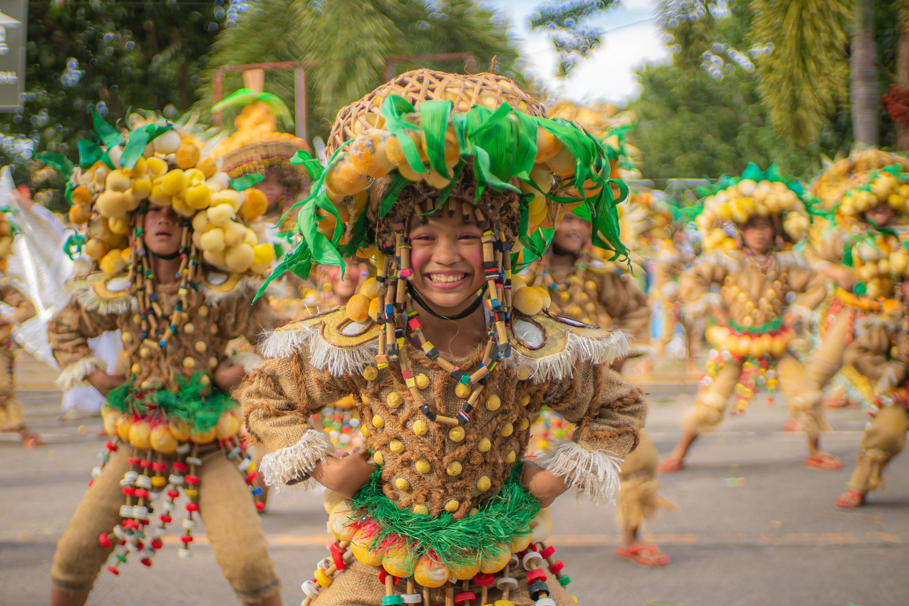

Learn more about this fruit and how it became the province' top export.

Learn about on how the yellowish brown fruit with sweet jelly like texture so sweet, it made them do a festival about it.
This bird often comes out at night and is only found in Camiguin.
Learn some geographical knowledge about the island.